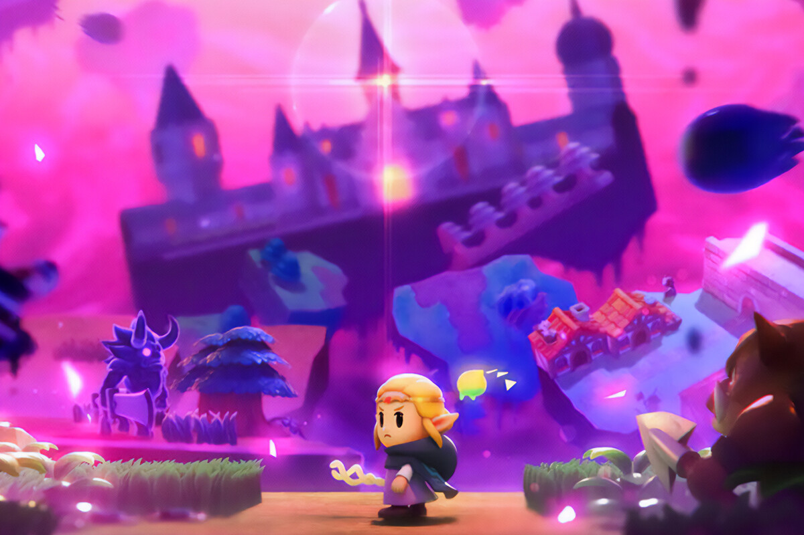

Sin duda se ha convertido en una de las apuestas más arriesgadas que ha hecho Nintendo durante los últimos años. Porque The Legend of Zelda: Echoes of Wisdom deja atrás a Link en favor de Zelda como protagonista, porque abandona el combate clásico a base de espada y escudo con un personaje que no puede atacar tal y como hemos hecho desde 1986, y porque deja atrás el precioso mundo abierto de los últimos Zelda para crear algo mucho más pequeñito y humilde que tiene más sabor a indie y doble A que a lo que nos ha acostumbrado la saga. Por todo eso, y por mucho más, durante la realización de este análisis me ha resultado aún más sorprendente lo bien que les ha salido la jugada.
